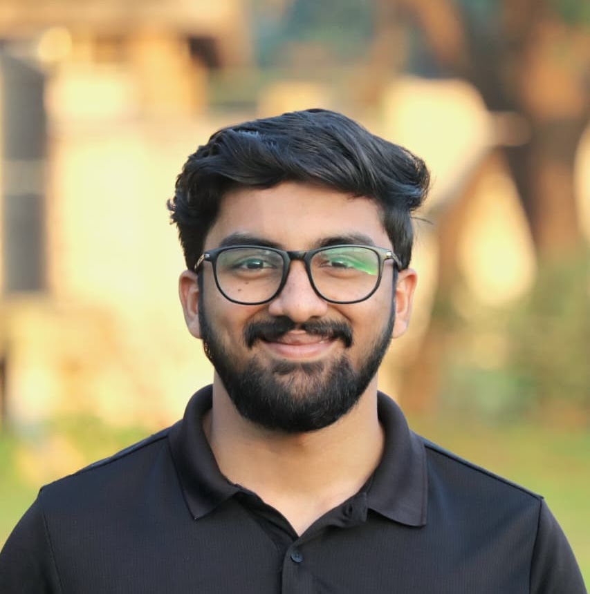

PhD Scholar
Sajay S S
Sajay is currently pursuing his PhD. He is a motivated graduate with dual master’s degrees in Applied Geology and Remote Sensing & GIS, specializing in Marine and Atmospheric Sciences. He has a strong interest in coastal geomorphology, coastal ecology, and air–sea interactions, focusing on the effects of climate change on coastal and marine environments. His skills include coastal mapping, vulnerability assessment, sea level rise studies, and using remote sensing and GIS for marine research.